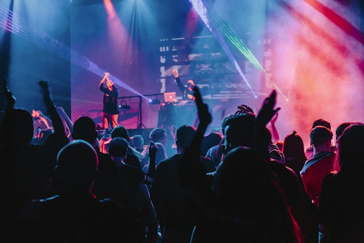

Alex
Voz y guitarra
Alex escribe canciones en servilletas y nunca encuentra sus púas.
Le gusta escribir de madrugada y siempre lleva un cuaderno lleno de ideas a medias. Su guitarra favorita es una Telecaster negra que encontró en un mercadillo.